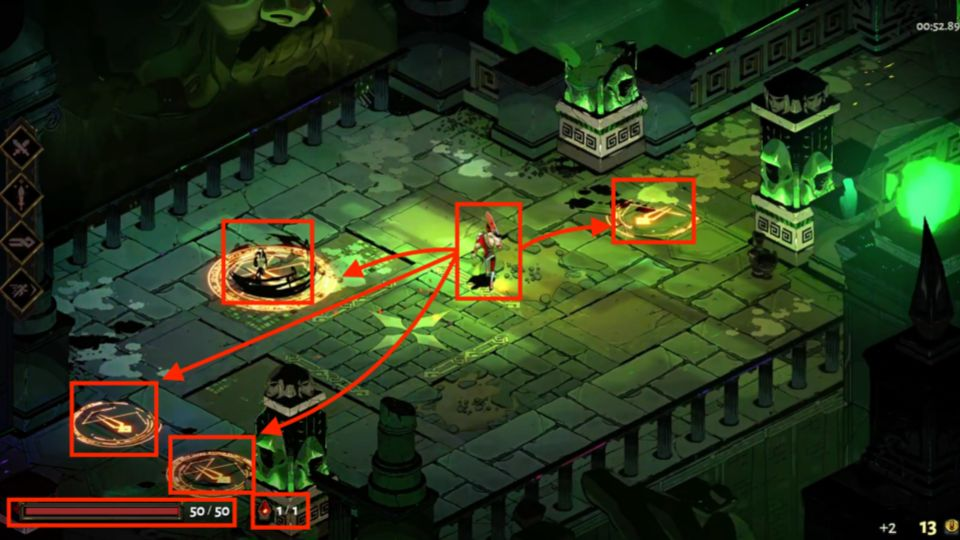

Cognitive Engineering, Fall 2024
Hades: Cognitive Load & Expert Performance
Contrary to what we assumed, taking attention away from expert players did not reduce them to novice levels. Novices took about 2.5 times the damage in both sessions, and experts made about 40% fewer errors on the subtraction itself.
- Role
- Initial research into VACP and Serial 3’s, participant analysis, and the attentional load write-up
- Team
- Nada Elgeziry, Sage Fuentes, Erin King
- Participants
- 5 players (3 novice, 2 expert)
- Sessions
- 2 runs each, 14 chambers per run

Overview
Hades is a roguelite action RPG by Supergiant Games in which players control Zagreus, the son of Hades, as he tries to escape the Underworld and reach Mount Olympus, fighting through randomly generated rooms that make every run different. Combat is operated in real time from a 2.5 dimension isometric view, so a player is tracking enemies, their own position, their health, and whether they have a cast available, all while the fight carries on around them. This study asked what happens when something else is added on top of that, and whether enough cognitive load could bring an expert down to a novice level.
Method
All sessions used a fresh file run, so every participant started from the same place, with the Stygian Blade as their weapon, a base health of 50, the same four gods available, and none of the meta-progression that a longer save would have carried. Each of them played two consecutive runs, a control session with nothing else to do, and a demand session with an ongoing Serial 3’s subtraction task performed aloud through combat. We recorded the sessions and coded them for hits taken, damage received, subtraction errors, and the behaviors we could see.
How a VACP score is built
Each subtask is rated on four channels, and the four are added together to give the score for that moment. The subtraction task comes to 7 on its own, all of it cognitive and none of it visual, auditory, or psychomotor, which is why it lands hardest on the subtasks that were already cognitively heavy and leaves the light ones more or less alone.
| Subtask | Visual | Auditory | Cognitive | Psychomotor | Total | With Serial 3’s |
|---|---|---|---|---|---|---|
| Dodge multiple enemies | 7 | 6.6 | 7 | 4.6 | 25.2 | 32.2 (over) |
| Attack multiple enemies | 7 | 6.6 | 7 | 4.6 | 25.2 | 32.2 (over) |
| Attack single enemy | 5.4 | 4.3 | 6.8 | 2.6 | 19.1 | 26.1 |
| Identify single enemy | 5 | 4.2 | 5.35 | 2.6 | 17.15 | 24.15 |
| Enter chamber | 1 | 1 | 1 | 2.2 | 5.2 | 12.2 |
| Perform Serial 3’s task | 0 | 0 | 7 | 0 | 7.0 | n/a |
Six of the fifteen subtasks we coded, taken from Appendix C of the report, with the last column adding the subtraction task’s 7, which a player carries continuously through a demand run.
Key findings
Experts were not reduced to novice performance
We had assumed that attention taken away would mean worse performance, and instead the expert group held their hits and damage below the novice group in both conditions, with their VACP scores raised throughout the demand run. One expert came out of it better than their control run, winning the boss fight against Megaera in chamber 14 after losing that same fight the first time around. The report gives three possible explanations: the participant was talking during the control run, which may have contributed to them losing focus; that run may have acted as a warm-up for the demand one; or the expert could have received better boons, which would have required less effort from them to win, and which comes down to the uncontrolled randomness of the game.
Experts adapted, novices degraded
Across both groups the demand condition brought out more defensive behaviors, such as moving or dashing away from enemies, and more erratic behaviors, such as performing their primary attack repeatedly and excessively either away from enemies or after the enemy had already been eliminated, though these were performed at a lower frequency in the expert group. For novices they showed up multiple times per chamber regardless of where they were in the subtraction task, whereas experts seem to only exhibit them during particular moments where they had externally perceivable difficulty with the task. Experts were also more efficient in both kinds of behavior, usually by performing subtasks like retrieving their projectile or setting up for another attack.
Experts chose boons for their build, novices chose arbitrarily
The two groups had also parted ways before any combat started, in which rooms they walked into and which rewards they took, since novices chose boons arbitrarily where experts consistently took the ones that directly affected their build. That is a difference in how they were reading the run, and it happens in a menu, with no enemy on screen to react to.
| Group | Hits | Damage | Subtraction errors |
|---|---|---|---|
| Expert average | 0.52 | 3.34 | n/a |
| Expert control | 0.59 | 3.23 | n/a |
| Expert demand | 0.45 | 3.45 | 0.64 |
| Novice average | 1.39 | 8.55 | n/a |
| Novice control | 1.40 | 8.23 | n/a |
| Novice demand | 1.38 | 8.87 | 1.08 |
Chambers 1, 13, and 14 sit outside these averages, since 1 and 13 hold no enemies, and 14 is the boss fight, which skews damage and which not every participant reached.
How players handled the counting
Novices relied on physical counting to track their progress, as seen with Novice 3 counting down by ones, going 57, 56, 55, 54 to get from 57 to 54, and that step-by-step approach indicates a need for active engagement with each digit, which can slow down their performance. Novice 2 instead mentioned using muscle memory from playing the game, which suggests they were drawing on learned movements from their previous gaming experience, though that reliance still required conscious management of the task. A third described the cost of it plainly, as spending a lot of effort just keeping the number they were currently on in their head.
I honestly had to take… the digits in the 1 place and count it down physically. I don’t know how much of that you heard me counting on the recording, but I actually had to count it down and then actually put it back in its place, so like 57, 6-5-4, 54, 3-2-1, 51.
I was going off of whatever muscle memory I kind of had.
Experts replaced calculation with patterns
Expert 1 started with actual calculations, working aloud through things like 148 minus 3, then shifted to coming up with a pattern for subtracting by 3 and memorizing it as the task became more complex, and that transition highlights their ability to optimize their cognitive effort, moving from actively calculating to relying on their memory. Expert 2 went another way entirely and adopted a rhythmic strategy, focusing on a pattern of movements, dodge, attack, attack, dodge, rather than responding to specific enemy tells, which reflects a high level of comfort and automation.
I was falling into more of a rhythm than normal and I wasn’t focusing on individual enemies… I was falling into a pattern of movements that I know would be less likely to get injured because I wasn’t able to focus as much on the task. This pattern was: (dodge - attack - attack - dodge)…
Design implications
The subtraction task was artificial, and nobody plays Hades while counting down by threes. Plenty of people do play with something else running, though. Streaming is the obvious case, where a player is reading a chat and answering it through the same fight we were watching, and playing with friends over voice is the ordinary version of the same thing. Monitoring a conversation is a different kind of cognitive task than arithmetic, so this study cannot say the effect would be the same size or the same shape, and that is worth saying before anything else.
What it can say is that the two groups absorbed a concurrent demand very differently. Experts had automation to fall back on, in the form of movement patterns they could run without reading individual enemy tells, and novices had nothing equivalent, so the same added load landed on them considerably harder.
If that holds outside a lab, then social and team-based games are where it would matter most, since there the second demand comes with how people play and not from an experimenter sitting beside you. Player level and cognitive load would then be part of what sets difficulty, alongside enemy health and damage numbers, and the environment a player sits in would be part of the design whether anyone accounted for it or not. That weighs heaviest on new players, who are already carrying the most load from the game itself before anything outside it is added.
Limitations
Five participants, three novice and two expert, is a small and uneven sample, and none of this was meant to generalize past the people who played it. Gameplay was limited to act one on fresh file runs, so everything here describes the opening of a run and not a whole one.
Each participant played the control run and the demand run back to back on the same day, which leaves a history effect live, and that is the most likely reason one expert came out of the demand run better than their control. Chambers 1, 13, and 14 sit outside the per-chamber averages. Prior experience with other roguelites was not controlled either, so novice here means new to Hades, which is not the same thing as new to the genre.
Reflection
The part I would spend the most time on again is calibrating the demand task. During pilot testing we tried Serial 3’s, Serial 7’s, and the Digit Span Memory Test at several lengths, forward from one to seven digits and backward at three and four, and we found Serial 3’s to be of appropriate difficulty for the complexity of Hades, increasing cognitive load without causing undue failure in the pilots we held throughout the participant sessions. Serial 7’s, the digit span forward at five digits or above, and the digit span backward at any length all seemed to increase demand to a degree that may have caused significant early game failure in the novice group and possibly even the expert group, while the forward version below five digits was not cognitively demanding enough to merit use as a demand task at all.
The takeaway was that there is a need to select a demand task that will not produce a floor or ceiling effect, and that for a game of moderate difficulty like Hades, Serial 3’s may be a good consideration for other games. If I ran this again I would want the control and demand sessions on separate days, and I would want to try GOMS alongside VACP to see what a second method picks up that this one missed.
Collaborative study with Nada Elgeziry and Sage Fuentes, presented in class.
Read the full research paper, Hades: Cognitive Load & Expert Performance (PDF)